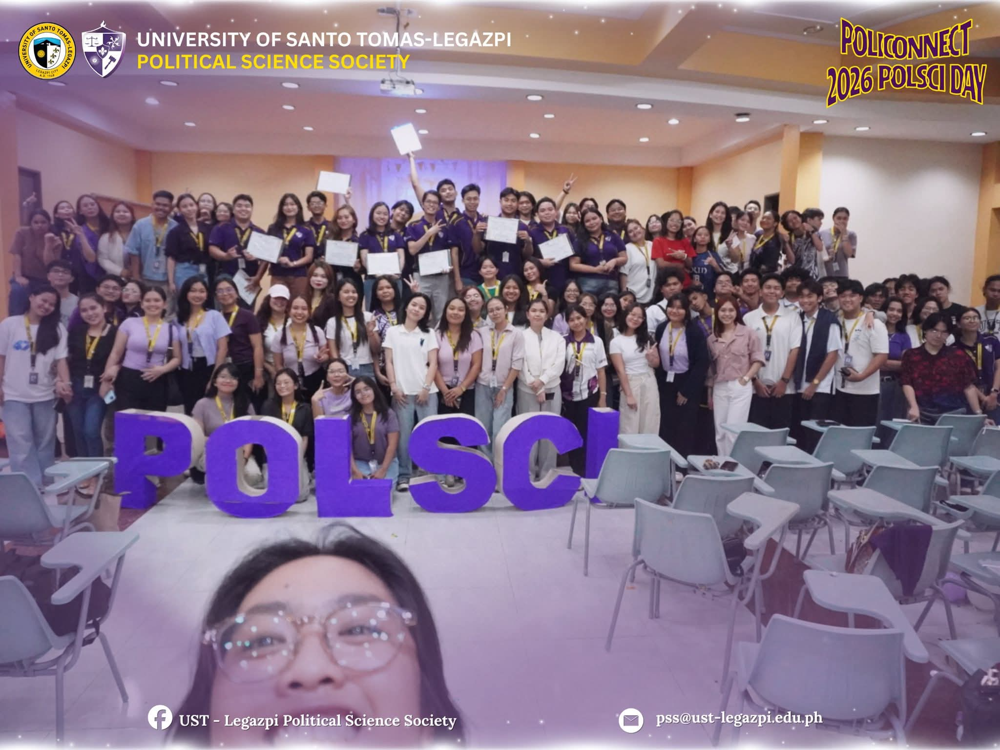
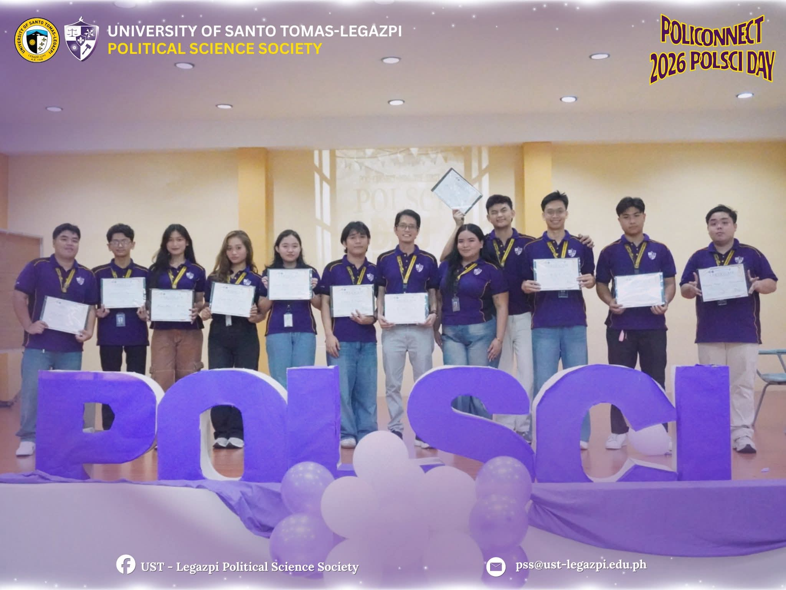
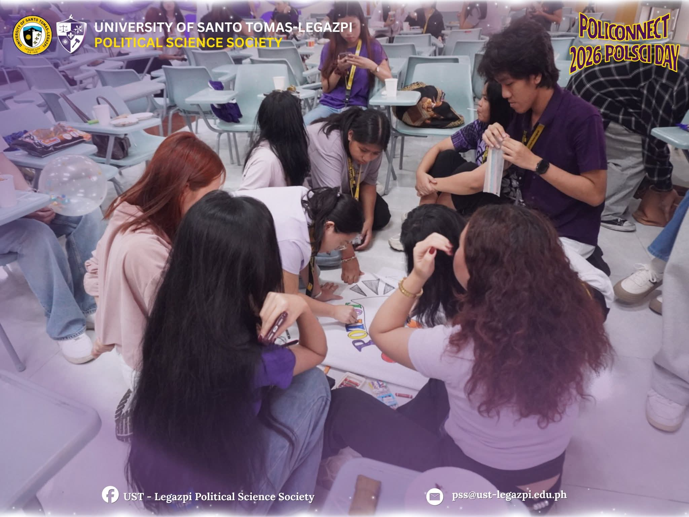

Poli-Connect 2026: The First Political Science Day marked a milestone celebration for the Political Science students of the University of Santo Tomas-Legazpi. Organized by the UST-Legazpi Political Science Society, the event aimed to strengthen camaraderie, unity, and a shared sense of identity among students within the Political Science program. Guided by the theme, “Connecting Political Minds for Academic Growth,” the event served as a platform for students to showcase teamwork, leadership, creativity, and collaboration.
The celebration featured various engaging activities, including chant-making and banner presentations, where students proudly expressed their Political Science spirit. The event also promoted generosity and solidarity through pantry-sharing activities among participants. One of the highlights of the celebration was POLYSAYAHAN, a series of interactive games and challenges designed to test participants’ teamwork, communication, strategy, leadership, and resilience.
The event concluded with an awarding ceremony recognizing the outstanding performances of each group and honoring exceptional leadership among participants. In addition, the election of new Political Science Society officers for Academic Year 2026-2027 was successfully conducted. Overall, Poli-Connect 2026 became a meaningful and memorable event that laid a strong foundation for future Political Science traditions and strengthened the unity of the Political Science community.

Image 1. Photo opportunity with the UST-L Political Science Society officers for Academic Year 2025–2026.

Image 2. Students creating their Team Logos